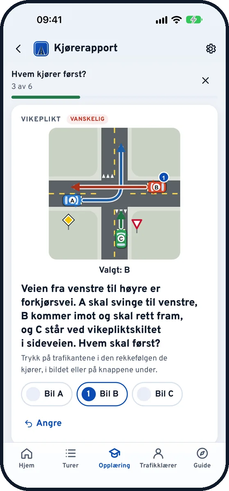
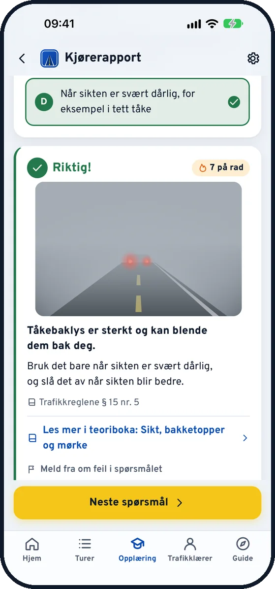
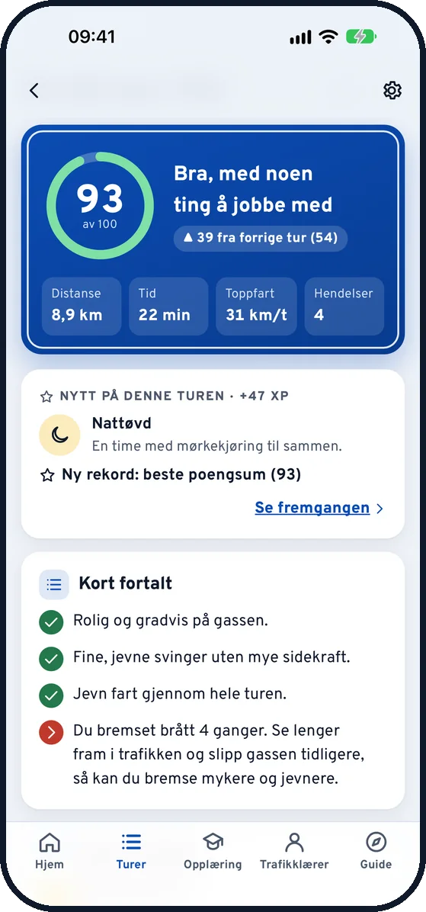
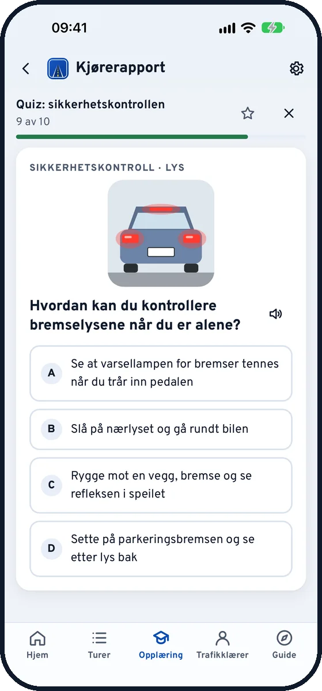

Førerkort klasse B
Øv til lappen. Få en rapport etter hver tur.
Teorien, sikkerhetskontrollen og øvelseskjøringen i én app. Etter hver tur ser dere hva som gikk bra, og hva dere bør øve på neste gang.
- Gratis å laste ned
- Ingen konto
- Turene blir på telefonen
Teorien
Klar til teoriprøven, uten å pugge i blinde.
Hvert svar får en forklaring og en tegning, og regelen står i teoriboka i appen.
- Alle 420 spørsmålene i de sju temaene på prøven
- Prøver som den ekte: 45 oppgaver på 90 minutter
- Skiltprøven, skiltkort og «Hvem kjører først?» med kryss som spilles av
- Hvor klar du er i prosent, og en plan fram til prøvedatoen


Øvelseskjøring
En rapport etter hver tur.
Fest telefonen i holderen. Ledsageren starter turen, føreren kjører, og når dere stopper, er rapporten klar.
- Bremsing, gass, svinger og fart, med konkrete tips til neste tur
- Fartsgrensen på skjermen mens dere kjører
- Hele turen på kart, med hendelsene der de skjedde
- Med kameraene: speil- og skulderblikk, bilen foran og feltlinjene. Bildene lagres aldri.


Sikkerhetskontrollen
Svar trygt når sensor spør.
Alle 46 oppgavene fra oppkjøringen, med tegninger av bilen, og en quiz som viser hva som sitter.
- Lys, dekk, bremser, væsker og varsellamper
- Tegninger som viser hvor du finner det på bilen
- Quiz du kan ta så mange ganger du vil

Trafikklæreren
Kom forberedt til neste kjøretime.
Appen samler det dere har øvd på siden forrige time. Vis det til trafikklæreren, eller del det på forhånd.
- Kilometer, mørkekjøring og variasjon siden sist
- Det dere bør øve mer på, og det som sitter
- Læreren kan svare med en melding tilbake

Slik kommer dere i gang
Tre steg, så er dere på vei.
Last ned appen
Gratis, og uten konto. Prøv 10 teorispørsmål med en gang.
Fest telefonen
I en holder i bilen. Ledsageren starter turen, og føreren rører ikke telefonen.
Se rapporten
Når dere stopper. Neste tur kan handle om det som står igjen.
Målingene er veiledende, og erstatter ikke ledsager eller trafikklærer.
2 000 kmøvelseskjøring
Gir bedre bilforsikring når du har lappen.
Flere forsikringsselskaper gir høyere startbonus etter 2 000 km øvelseskjøring med ledsager. Kjørerapport fører loggen for dere, klar til å vise selskapet. Sjekk vilkårene hos ditt.
Pris
Ett kjøp. Ikke abonnement.
Gratis
0 kr
For alltid
- Opptak og rapport etter hver tur
- Kart, fartsgrense og kjørelogg
- Rapportene for de 10 siste turene
- 10 teorispørsmål å prøve
- Turene kan alltid eksporteres
Kjørerapport Pluss
499 kr
Én gang, gjelder til lappen er i boks
- Hele teorien: 420 spørsmål, prøver, teoriboka og skiltprøven
- Sikkerhetskontrollen med quiz
- Kameraene: speil, skulderblikk og bilen foran
- Opplæringsplanen og faresteder på kartet
- Oppsummeringen til trafikklæreren
- Alle rapportene, ikke bare de 10 siste
Bruker trafikkskolen din Kjørerapport? Da får du Pluss med en kode fra skolen.
For trafikkskoler
Elever som har øvd, før de kommer til timen.
Gi elevene Kjørerapport Pluss. Dere deler ut tilgangene selv, og eleven tar med seg rapportene til timen.
- Egen side for skolenDel ut tilganger på SMS, e-post eller QR-kode, og se hvor mange som er i bruk.
- 450 kr per elev inkl. mvaKjøp en pakke. En tilgang som aldri blir tatt i bruk, kan trekkes tilbake.
- Ingen konto, ingen elevnavnEleven skriver bare inn koden. Vi lagrer ingen navn.
Spørsmål og svar
Lurer du på noe?
Hva koster Kjørerapport?
Appen er gratis å laste ned, og opptak, rapport, kart og 10 teorispørsmål er gratis. Kjørerapport Pluss koster 499 kr én gang, ikke som abonnement, og gir hele teorien, sikkerhetskontrollen, kameraene og alle rapportene.
Virker den på Android?
Appen er for iPhone. På Android og PC kan du bruke nettversjonen i nettleseren. Der er alt gratis unntatt teorien, som låses opp med en kode fra trafikkskolen.
Trenger jeg en konto?
Nei. Turene lagres bare på telefonen din, og ingen turer lastes opp. Du bestemmer selv om du vil dele en rapport, for eksempel med trafikklæreren.
Hvordan måler appen kjøringen?
Med telefonens GPS, akselerometer og gyroskop: bremsing, gass, svinger og fart. Fartsgrensene hentes fra Statens vegvesen. Med kameraene på ser appen også speil- og skulderblikk og bilen foran. Bildene lagres aldri, og gjenkjenningen skjer på telefonen.
Kan den erstatte trafikkskolen?
Nei. Kjørerapport er laget for øvelseskjøringen mellom timene. Målingene er veiledende, og erstatter ikke ledsager eller trafikklærer.
Jeg har fått en kode fra trafikkskolen. Hva gjør jeg?
Åpne lenken du fikk på SMS eller e-post, eller åpne appen, trykk på tannhjulet, velg «Kjørerapport Pluss» og «Kode fra trafikkskolen».
Klar for neste øvelsestur?
Last ned Kjørerapport, og få en rapport etter turen.